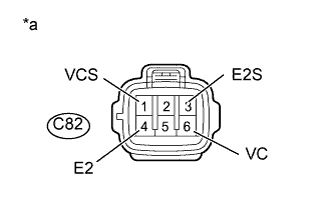

DTC P0087 Чрезмерно низкое давление в топливной системе / распределителе топлива |
DTC P0190 Цепь датчика давления в распределителе топлива |
DTC P0192 Низкий уровень сигнала на входе цепи датчика давления в распределителе топлива |
DTC P0193 Высокий уровень сигнала на входе цепи датчика давления в распределителе топлива |
| Режим поездки при обнаружении DTC | Условие обнаружения DTC | Неисправный участок |
| После работы двигателя на холостом ходу в течение 60 с несколько раз в течение 30 с быстро увеличьте частоту вращения коленчатого вала до 2500 об/мин. | Выходное напряжение датчика давления топлива определенное количество раз (в течение 0,1 с или дольше) остается неизменным. (логика диагностирования за 1 поездку) |
|
| Режим поездки при обнаружении DTC | Условие обнаружения DTC | Неисправный участок |
| Зажигание включено (IG) в течение 1 с | Выходное напряжение датчика давления топлива в течение 0,5 с оказывается не выше 0,55 В или не ниже 4,9 В. (логика диагностирования за 1 поездку) |
|
| Режим поездки при обнаружении DTC | Условие обнаружения DTC | Неисправный участок |
| Зажигание включено (IG) в течение 1 с | Выходное напряжение датчика давления в топливной системе составляет менее 0,55 В в течение 0,5 с. (логика диагностирования за 1 поездку) |
|
| Режим поездки при обнаружении DTC | Условие обнаружения DTC | Неисправный участок |
| Зажигание включено (IG) в течение 1 с | Выходное напряжение датчика давления топлива в течение 0,5 с оказывается не ниже 4,9 В. (логика диагностирования за 1 поездку) |
|
| № DTC | Параметры из Data List |
| P0087 |
|
| P0190 | |
| P0192 | |
| P0193 |
| 1.ПРОВЕРЬТЕ, ВЫВОДЯТСЯ ЛИ DTC |
Подсоедините портативный диагностический прибор к DLC3.
Включите зажигание (IG) и портативный диагностический прибор.
Войдите в следующие меню: Powertrain / Engine and ECT / DTC.
Считайте коды DTC.
| Результат | Следующий шаг |
| P0190, P0192 или P0193 выводится | А |
| P0087 выводится | B |
|
| ||||
| А | |
| 2.ПРОВЕРЬТЕ ЖГУТ ПРОВОДОВ И РАЗЪЕМ (ДАТЧИК ДАВЛЕНИЯ В ТОПЛИВНОЙ СИСТЕМЕ - ЕСМ) |
Отсоедините разъем датчика давления в топливной системе.
Отсоедините разъем ЭБУ.
Измерьте сопротивление в соответствии со значениями, приведенными в таблице ниже.
| Контакты для подключения диагностического прибора | Состояние | Заданные условия |
| C82-5 (PR) - C90-16 (PCR1) | Всегда | Менее 1 Ом |
| C82-2 (PR2) - C90-2 (PCR2) | Всегда | Менее 1 Ом |
| C82-1 (VCS) - C90-13 (VCS) | Всегда | Менее 1 Ом |
| C82-6 (VC) - C90-14 (VCM) | Всегда | Менее 1 Ом |
| C82-4 (E2) - C90-15 (E2M) | Всегда | Менее 1 Ом |
| C82-3 (E2S) - C90-8 (E2S) | Всегда | Менее 1 Ом |
| Контакты для подключения диагностического прибора | Состояние | Заданные условия |
| C82-5 (PR) или C90-16 (PCR1) - масса | Всегда | 10 кОм или более |
| C82-2 (PR2) или C90-2 (PCR2) - масса | Всегда | 10 кОм или более |
| C82-1 (VCS) или C90-13 (VCS) - масса | Всегда | 10 кОм или более |
| C82-6 (VC) или C90-14 (VCМ) - масса | Всегда | 10 кОм или более |
| C82-4 (E2) или C90-15 (E2M) - масса | Всегда | 10 кОм или более |
| C82-3 (E2S) или C90-8 (E2S) - масса | Всегда | 10 кОм или более |
Подсоедините разъем датчика давления в топливной системе.
Подсоедините разъем ECM.
|
| ||||
| OK | |
| 3.ПРОВЕРЬТЕ ЕСМ (НАПРЯЖЕНИЕ ДАТЧИКА ДАВЛЕНИЯ В ТОПЛИВНОЙ СИСТЕМЕ) |
|  |
Отсоедините разъем датчика давления в топливной системе.
Измерьте напряжение в соответствии со значениями, приведенными в таблице.
| Контакты для подключения диагностического прибора | Положение переключателя | Заданные условия |
| C82-6 (VC) - C82-4 (E2) | Выключатель зажигания в состоянии ON (ВКЛ) (IG) | 4,5-5,5 В |
| C82-1 (VCS) - C82-3 (E2S) | Выключатель зажигания в состоянии ON (ВКЛ) (IG) | 4,5-5,5 В |
| *a | Вид спереди разъема со стороны жгута проводов: (к датчику давления в топливной системе) |
Подсоедините разъем датчика давления в топливной системе.
|
| ||||
| OK | |
| 4.ЗАМЕНИТЕ ДАТЧИК ДАВЛЕНИЯ ТОПЛИВА (ТОПЛИВНУЮ СИСТЕМУ COMMON RAIL) |
Замените топливную систему Common Rail (Нажмите здесь).
| ДАЛЕЕ | |
| 5.УДАЛИТЕ ВОЗДУХ ИЗ ТОПЛИВНОЙ СИСТЕМЫ |
Удалите воздух из топливной системы (Нажмите здесь).
| ДАЛЕЕ | |
| 6.ПРОВЕРЬТЕ, ВОЗОБНОВЛЯЕТСЯ ЛИ ВЫВОД DTC (DTC P0087, P0190, P0192, P0193) |
Подсоедините портативный диагностический прибор к DLC3.
Включите зажигание (IG) и портативный диагностический прибор.
Удалите коды DTC (Нажмите здесь).
Дайте двигателю поработать на холостом ходу в течение 60 с, а затем несколько раз в течение 30 с быстро увеличьте частоту вращения коленчатого вала до 2500 об/мин.
Войдите в следующие меню: Powertrain / Engine and ECT / DTC.
Считайте коды DTC.
| Результат | Следующий шаг |
| P0087, P0190, P0192 или P0193 выводится | А |
| Коды DTC не выводятся | B |
|
| ||||
| А | |
| 7.ЗАМЕНИТЕ ECM |
Замените ECM (Нажмите здесь).
|
| ||||
| 8.ОТРЕМОНТИРУЙТЕ ИЛИ ЗАМЕНИТЕ ЖГУТ ПРОВОДОВ ИЛИ РАЗЪЕМ |
Отремонтируйте или замените жгут проводов или разъем.
| ДАЛЕЕ | |
| 9.ПРОВЕРЬТЕ, УСТРАНЕНА ЛИ ДОЛЖНЫМ ОБРАЗОМ НЕИСПРАВНОСТЬ |
Подсоедините портативный диагностический прибор к DLC3.
Сбросьте коды DTC (Нажмите здесь).
Выключите зажигание и подождите не менее 30 с.
Включите зажигание (IG).
Дайте двигателю поработать на холостом ходу в течение 60 с, а затем несколько раз в течение 30 с быстро увеличьте частоту вращения коленчатого вала до 2500 об/мин.
Убедитесь, что DTC не выводится снова.
Войдите в следующие меню: Powertrain / Engine and ECT / Utility / All Readiness.
Введите DTC P0087, P0190, P0192 и/или P0193.
Убедитесь, что для параметра STATUS (состояние) отображается значение NORMAL (нормальное). Если параметр STATUS имеет значение INCOMPLETE (не завершено) или UNKNOWN (нет данных), увеличьте время работы на холостом ходу.
| ДАЛЕЕ | ||
| ||